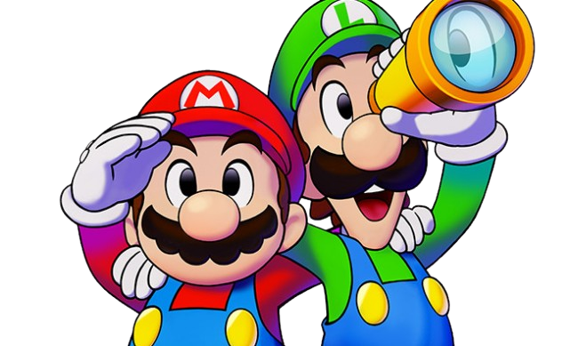

Restaure a paz da ilha Nauta
Restaurar a paz e reunir o mundo fragmentado de Elétria (Concordia) reconectando as suas ilhas à Ilha Nauta (Shipshape Island), impulsionadas pelo poder dos faróis.
Reconectar as Ilhas: Usar o canhão da Ilha Nauta para viajar a ilhas derivantes e religá-las ao continente original.
Ativar os Faróis: Restaurar a energia dos faróis espalhados pelas regiões para desbloquear novas rotas marítimas.
Derrotar a Força Sombria: Enfrentar a ameaça de Glohm e seus seguidores que isolam os habitantes locais.
Resgatar Moradores: Encontrar e ajudar os habitantes do Reino Cogumelo e os nativos de Elétria espalhados pelo oceano.
Exploração em Dupla: Utilizar saltos, martelos e as Luigideias para resolver quebra-cabeças no cenário.
Batalhas Estratégicas: Vencer combates por turnos usando Anotações Bros e plugs de batalha
Restaure a paz e reuna o mundo fragmentado de elétria
restaure a paz com mario e luigi em sua aventura
Em Mario & Luigi: Brothership, Mario e Luigi são sugados para um portal que leva a Concordia, um mundo fragmentado com temática de eletricidade e plugues. A terra já foi unida pela Uni-Tree e pela energia "Connectar", mas uma entidade antiga e sombria chamada Reclusa a despedaçou em ilhas flutuantes, isolando a todos em total.
